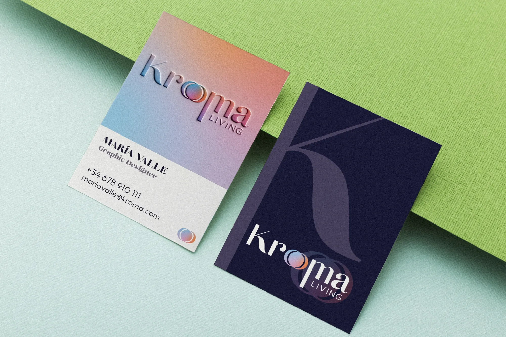
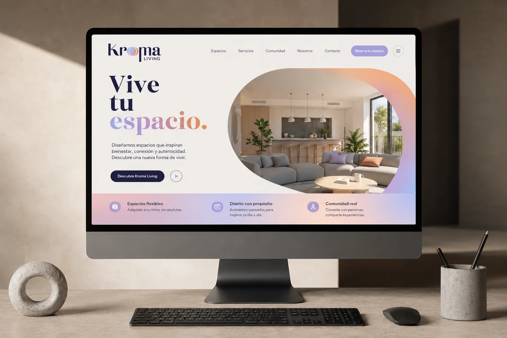
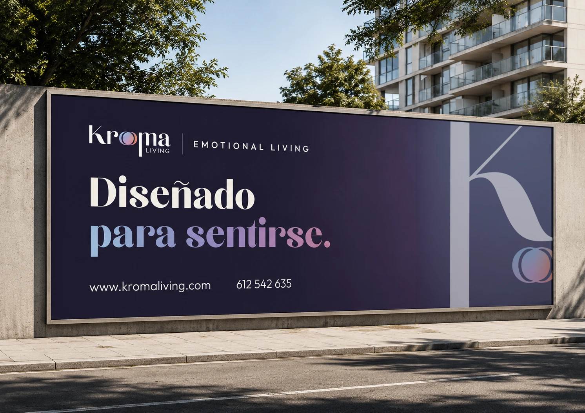
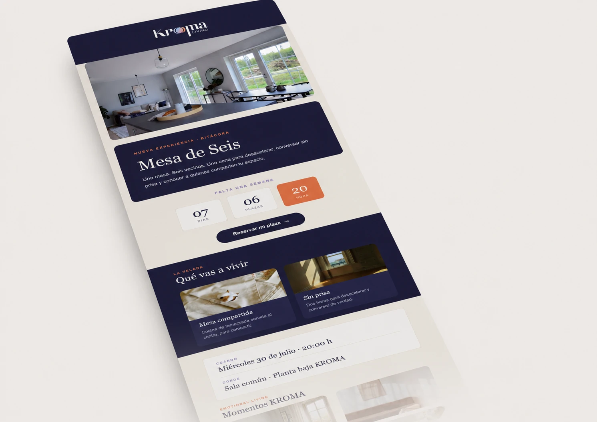
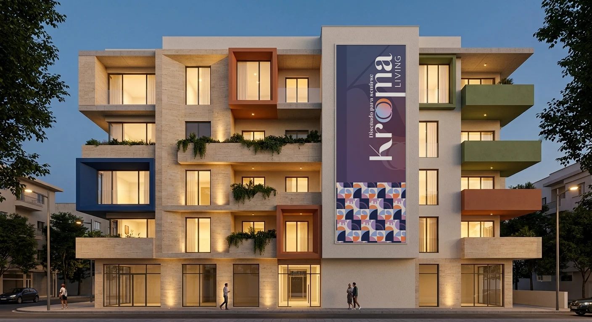
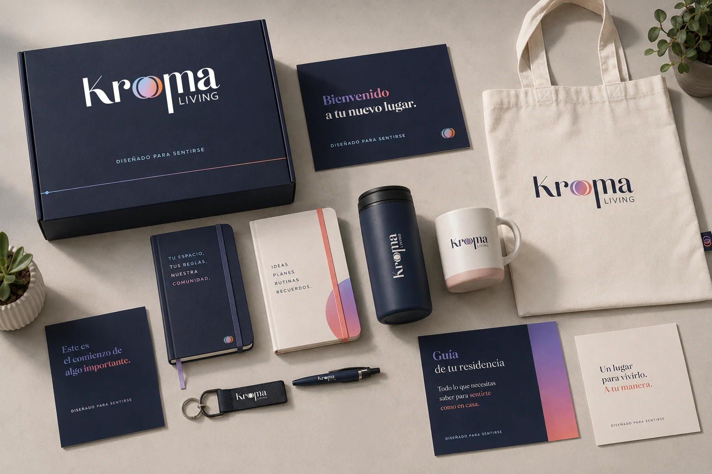
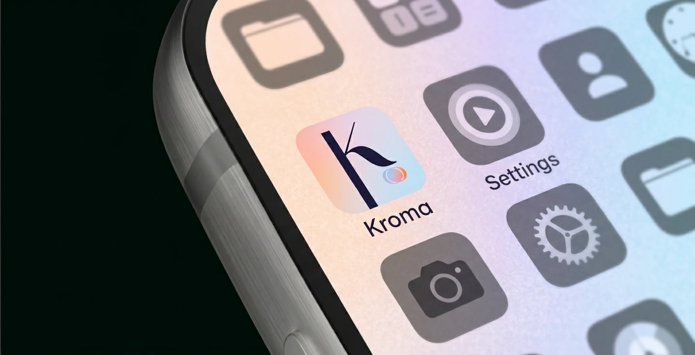

Kroma Living
Kroma Living
Una marca residencial pensada para sentirse: de la identidad y el packaging a la web y la comunicación, en unos dos meses.
A residential brand designed to be felt: from identity and packaging to the website and communications, in about two months.








Una marca con luz propia.
A brand with a light of its own.
Logotipo con un símbolo de círculos que se solapan en degradado, una K como isotipo y una paleta que va del azul noche a los tonos cálidos.
A logotype with a symbol of overlapping gradient circles, a K as the monogram and a palette running from midnight blue to warm tones.
- Logotipo y símbolo
- Logotype and symbol
- Isotipo K
- K monogram
- Tarjetas de visita
- Business cards
La misma voz en cada objeto.
The same voice on every object.
Botellas, kit de bienvenida, libretas, tote y taza, para que el residente se lleve la marca a casa.
Bottles, welcome kit, notebooks, tote and mug, so residents take the brand home with them.
- Botellas
- Bottles
- Kit de bienvenida
- Welcome kit
- Tote, taza y libretas
- Tote, mug and notebooks
De la fachada a la pantalla.
From the façade to the screen.
La marca fuera y dentro: web, email, valla, lona de fachada e icono de app.
The brand inside and out: website, email, billboard, façade banner and app icon.
- Web
- Website
- Email «Mesa de Seis»
- “Mesa de Seis” email
- Valla y lona de fachada
- Billboard and façade banner